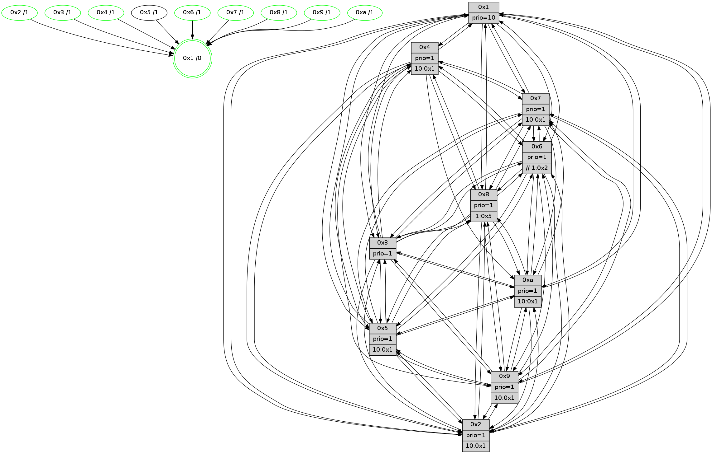

>> << IDX [start] -100 -25 -5 +0 +5 +25 [1615.30894494]
 Previous packets
----------------------------------------------------------------------
1610.580162 beacon01(faad) #0 coord=01,02,03,04,05,06,07,0a,09,08 cycle=688.0ms assoc
-- color-indic=1 64 a6 83
1610.590145 beacon02(faad) #0 coord=01,02,03,04,05,06,07,0a,09,08 cycle=688.0ms assoc 64 35 b2
1610.600144 beacon03(faad) #0 coord=01,02,03,04,05,06,07,0a,09,08 cycle=688.0ms assoc 64 4f ff
1610.610146 beacon04(faad) #0 coord=01,02,03,04,05,06,07,0a,09,08 cycle=688.0ms assoc 64 38 15
1610.620145 beacon05(faad) #0 coord=01,02,03,04,05,06,07,0a,09,08 cycle=688.0ms assoc 64 42 58
1610.630144 beacon06(faad) #0 coord=01,02,03,04,05,06,07,0a,09,08 cycle=688.0ms assoc 64 cc 8f
1610.640146 beacon07(faad) #0 coord=01,02,03,04,05,06,07,0a,09,08 cycle=688.0ms assoc 64 b6 c2
1610.650149 beacon0a(faad) #0 coord=01,02,03,04,05,06,07,0a,09,08 cycle=688.0ms assoc 64 c7 c9
1610.660151 beacon09(faad) #0 coord=01,02,03,04,05,06,07,0a,09,08 cycle=688.0ms assoc 64 49 1e
1610.670152 beacon08(faad) #0 coord=01,02,03,04,05,06,07,0a,09,08 cycle=688.0ms assoc 64 33 53
1610.681086 [STC(5)->7-.->1 #0.293 to-color d=2]
1610.682981 [Hello(8): seq=970 sym=5,2,3,7,9,6,4,10,1 sysInfo=hasWarning stat=5:13,7,12,4/2:3,2,5,0/3:2,11,10,6/7:2,11,10,1/9:14,6,14,9/6:14,9,8,5/4:5,11,2,3/10:8,6,4,8/1:2,5,11,0]
1610.685711 [Color(1) seq=706 @0:0 prio=10]
1610.686987 [Hello(10): seq=959 sym=6,2,3,8,7,5,9,4,1 sysInfo=hasWarning stat=6:5,8,3,10/2:14,13,7,4/3:4,1,14,1/8:1,15,9,8/7:7,9,4,1/5:2,1,8,5/9:4,10,2,0/4:8,11,14,5/1:0,3,8,1]
1610.690641 [Hello(4): seq=1026 sym=5,8,6,2,3,9,7,10,1 sysInfo=hasWarning stat=5:4,4,1,6/8:13,2,7,1/6:10,10,14,7/2:12,13,5,5/3:15,15,13,2/9:12,4,3,6/7:5,14,8,2/10:14,12,11,1/1:3,5,7,1]
1610.694407 [Color(4) seq=543 @0:0 prio=1 >10.@1,1.@2,1.@3,1.@5]
1610.696528 [Hello(7): seq=1026 sym=2,3,5,6,8,4,9,10,1 sysInfo=hasWarning stat=2:3,7,3,8/3:5,13,8,8/5:5,15,15,7/6:15,14,2,2/8:11,6,10,3/4:2,9,7,2/9:7,6,10,5/10:8,14,1,1/1:2,12,6,0]
1610.699987 [Color(10) seq=603 @0:0 prio=1 >10.@1,1.@5,1.@6,1.@7]
1610.704623 [Color(7) seq=533 @0:0 prio=1 >10.@1,1.@5,1.@6,1.@8]
1610.706281 [Hello(9): seq=970 sym=2,5,3,4,7,6,8,10,1 sysInfo=hasWarning stat=2:12,8,6,15/5:15,14,10,2/3:11,12,4,8/4:0,4,1,0/7:9,10,4,2/6:9,8,3,6/8:2,4,12,11/10:1,3,1,1/1:10,8,9,1]
1610.711354 [Color(9) seq=552 @0:0 prio=1 >10.@1,1.@5,1.@6,1.@7]
----------------------------------------------------------------------
1611.368292 beacon01(faad) #0 coord=01,02,03,04,05,06,07,0a,09,08 cycle=688.0ms assoc
-- color-indic=1 64 62 8d
1611.378275 beacon02(faad) #0 coord=01,02,03,04,05,06,07,0a,09,08 cycle=688.0ms assoc 64 f1 bc
1611.388276 beacon03(faad) #0 coord=01,02,03,04,05,06,07,0a,09,08 cycle=688.0ms assoc 64 8b f1
1611.398276 beacon04(faad) #0 coord=01,02,03,04,05,06,07,0a,09,08 cycle=688.0ms assoc 64 fc 1b
1611.408276 beacon05(faad) #0 coord=01,02,03,04,05,06,07,0a,09,08 cycle=688.0ms assoc 64 86 56
1611.418276 beacon06(faad) #0 coord=01,02,03,04,05,06,07,0a,09,08 cycle=688.0ms assoc 64 08 81
1611.428276 beacon07(faad) #0 coord=01,02,03,04,05,06,07,0a,09,08 cycle=688.0ms assoc 64 72 cc
1611.438279 beacon0a(faad) #0 coord=01,02,03,04,05,06,07,0a,09,08 cycle=688.0ms assoc 64 03 c7
1611.448280 beacon09(faad) #0 coord=01,02,03,04,05,06,07,0a,09,08 cycle=688.0ms assoc 64 8d 10
1611.458282 beacon08(faad) #0 coord=01,02,03,04,05,06,07,0a,09,08 cycle=688.0ms assoc 64 f7 5d
1611.469550 [Hello(1): seq=936 sym=4,2,9,5,10,3,8,6,7 sysInfo=coloring-mode-on,ColoringModeRequestCalled stat=4:1,3,15,5/2:11,4,13,9/9:14,8,14,6/5:1,3,3,13/10:5,15,5,11/3:7,0,7,15/8:8,13,12,9/6:2,12,15,8/7:3,3,4,4]
1611.473587 [Hello(6): seq=1027 sym=3,2,5,4,7,9,8,10,1 sysInfo=hasWarning stat=3:5,10,1,1/2:2,6,8,3/5:11,3,7,8/4:15,2,15,12/7:9,3,5,2/9:6,5,4,14/8:11,12,9,12/10:13,6,14,2/1:1,10,8,1]
1611.476368 [Hello(3): seq=1027 sym=1,7,6,2,4,8,9,10,5 sysInfo=hasWarning stat=1:4,12,13,0/7:8,14,11,1/6:5,12,3,1/2:5,4,3,0/4:2,11,7,1/8:1,15,14,10/9:15,14,0,4/10:7,6,7,9/5:3,4,12,4]
1611.479085 [Hello(2): seq=1023 sym=4,5,7,6,3,9,8,10,1 sysInfo=hasWarning stat=4:6,9,15,1/5:14,3,2,5/7:13,2,10,4/6:12,5,3,1/3:2,10,6,1/9:1,5,13,13/8:3,13,12,1/10:15,8,13,0/1:6,7,3,0]
1611.482217 [Color(2) seq=587 @0:0 prio=1 >10.@1,1.@3,1.@4,1.@5]
1611.485430 [Color(8) seq=614 @0:0 prio=1 >1.@5,1.@6,1.@7,1.@9]
1611.487439 [Hello(5): seq=1027 sym=7,6,4,2,1,9,8,10,3 sysInfo=hasWarning stat=7:10,12,6,2/6:12,3,6,4/4:7,14,8,1/2:9,9,7,2/1:0,1,0,0/9:3,10,2,15/8:4,12,13,10/10:11,9,6,13/3:11,6,8,0]
1611.493324 [TreeStatus(7)-.->1 #0.293 new-neigh,tree-change,inconsistent-stability,stable child=1]
1611.496843 [Color(6) seq=659 @0:0 prio=1 >>1.@2,1.@3,1.@4]
1611.499552 [Color(3) seq=656 @0:0 prio=1]
----------------------------------------------------------------------
1612.156423 beacon01(faad) #0 coord=01,02,03,04,05,06,07,0a,09,08 cycle=688.0ms assoc
-- color-indic=1 64 de 88
1612.166406 beacon02(faad) #0 coord=01,02,03,04,05,06,07,0a,09,08 cycle=688.0ms assoc 64 4d b9
1612.176405 beacon03(faad) #0 coord=01,02,03,04,05,06,07,0a,09,08 cycle=688.0ms assoc 64 37 f4
1612.186406 beacon04(faad) #0 coord=01,02,03,04,05,06,07,0a,09,08 cycle=688.0ms assoc 64 40 1e
1612.196406 beacon05(faad) #0 coord=01,02,03,04,05,06,07,0a,09,08 cycle=688.0ms assoc 64 3a 53
1612.206407 beacon06(faad) #0 coord=01,02,03,04,05,06,07,0a,09,08 cycle=688.0ms assoc 64 b4 84
1612.216405 beacon07(faad) #0 coord=01,02,03,04,05,06,07,0a,09,08 cycle=688.0ms assoc 64 ce c9
1612.226412 beacon0a(faad) #0 coord=01,02,03,04,05,06,07,0a,09,08 cycle=688.0ms assoc 64 bf c2
1612.246411 beacon08(faad) #0 coord=01,02,03,04,05,06,07,0a,09,08 cycle=688.0ms assoc 64 4b 58
1612.257958 [Hello(8): seq=971 sym=5,2,3,7,9,6,4,10,1 sysInfo=hasWarning stat=5:14,7,12,4/2:3,2,5,0/3:2,12,10,6/7:3,12,10,2/9:15,7,14,9/6:14,10,8,5/4:6,12,2,3/10:9,7,4,8/1:3,6,11,0]
1612.261323 [Hello(9): seq=971 sym=2,5,3,4,7,6,8,10,1 sysInfo=hasWarning stat=2:13,9,6,15/5:0,14,11,2/3:12,13,4,8/4:0,4,1,0/7:9,10,4,3/6:10,9,3,6/8:3,5,12,11/10:1,3,1,1/1:11,8,9,1]
1612.265072 [Hello(7): seq=1027 sym=2,3,5,6,8,4,9,10,1 sysInfo=hasWarning stat=2:3,7,3,8/3:5,14,8,8/5:5,15,0,7/6:15,15,2,2/8:12,6,10,3/4:2,9,7,2/9:8,7,10,5/10:8,14,1,1/1:2,12,6,0]
1612.267886 [Color(7) seq=534 @0:0 prio=1 >10.@1,1.@5,1.@6,1.@8]
1612.270260 [Hello(4): seq=1027 sym=5,8,6,2,3,9,7,10,1 sysInfo=hasWarning stat=5:5,4,2,6/8:14,3,7,1/6:11,11,14,7/2:13,14,5,5/3:0,0,13,2/9:13,5,3,6/7:6,15,8,3/10:14,13,11,1/1:4,5,7,1]
1612.274045 [Color(4) seq=544 @0:0 prio=1 >10.@1,1.@2,1.@3,1.@5]
1612.276902 [Hello(10): seq=960 sym=6,2,3,8,7,5,9,4,1 sysInfo=hasWarning stat=6:6,9,3,10/2:15,14,7,4/3:5,2,14,1/8:2,0,9,8/7:7,10,4,2/5:3,1,9,5/9:5,11,2,0/4:8,11,14,5/1:1,3,8,1]
1612.279466 [Color(9) seq=553 @0:0 prio=1 >10.@1,1.@5,1.@6,1.@7]
1612.281129 [Color(10) seq=604 @0:0 prio=1 >10.@1,1.@5,1.@6,1.@7]
----------------------------------------------------------------------
1612.944553 beacon01(faad) #0 coord=01,02,03,04,05,06,07,0a,09,08 cycle=688.0ms assoc
-- color-indic=1 64 ca e6
1612.954535 beacon02(faad) #0 coord=01,02,03,04,05,06,07,0a,09,08 cycle=688.0ms assoc 64 59 d7
1612.964536 beacon03(faad) #0 coord=01,02,03,04,05,06,07,0a,09,08 cycle=688.0ms assoc 64 23 9a
1612.974536 beacon04(faad) #0 coord=01,02,03,04,05,06,07,0a,09,08 cycle=688.0ms assoc 64 54 70
1612.984535 beacon05(faad) #0 coord=01,02,03,04,05,06,07,0a,09,08 cycle=688.0ms assoc 64 2e 3d
1612.994536 beacon06(faad) #0 coord=01,02,03,04,05,06,07,0a,09,08 cycle=688.0ms assoc 64 a0 ea
1613.004537 beacon07(faad) #0 coord=01,02,03,04,05,06,07,0a,09,08 cycle=688.0ms assoc 64 da a7
1613.014544 beacon0a(faad) #0 coord=01,02,03,04,05,06,07,0a,09,08 cycle=688.0ms assoc 64 ab ac
1613.034541 beacon08(faad) #0 coord=01,02,03,04,05,06,07,0a,09,08 cycle=688.0ms assoc 64 5f 36
1613.046994 [Hello(5): seq=1028 sym=7,6,4,2,1,9,8,10,3 sysInfo=hasWarning stat=7:11,13,6,3/6:12,4,6,4/4:8,15,8,1/2:9,9,7,2/1:0,1,0,0/9:4,11,2,15/8:5,12,13,10/10:12,10,6,13/3:11,7,8,0]
1613.050139 [Hello(6): seq=1028 sym=3,2,5,4,7,9,8,10,1 sysInfo=hasWarning stat=3:5,11,1,1/2:2,6,8,3/5:11,3,7,8/4:0,3,15,12/7:10,4,5,2/9:7,6,4,14/8:12,12,9,12/10:14,7,14,2/1:2,10,8,1]
1613.053296 [Color(6) seq=660 @0:0 prio=1 >>1.@2,1.@3,1.@4]
1613.055421 [Color(8) seq=615 @0:0 prio=1 >1.@5,1.@6,1.@7,1.@9]
1613.059712 [Hello(2): seq=1024 sym=4,5,7,6,3,9,8,10,1 sysInfo=hasWarning stat=4:7,10,15,1/5:15,3,2,5/7:14,3,10,5/6:12,6,3,1/3:2,11,6,1/9:2,6,13,13/8:4,14,12,1/10:0,9,13,0/1:7,7,3,0]
1613.064134 [Color(2) seq=588 @0:0 prio=1 >10.@1,1.@3,1.@4,1.@5]
1613.065790 [Hello(3): seq=1028 sym=1,7,6,2,4,8,9,10,5 sysInfo=hasWarning stat=1:5,13,13,0/7:8,15,11,1/6:5,12,3,1/2:5,4,3,0/4:3,12,7,1/8:2,15,14,10/9:0,15,0,4/10:8,7,7,9/5:3,4,12,4]
1613.068942 [Color(3) seq=657 @0:0 prio=1]
1613.070185 [Hello(1): seq=937 sym=4,2,9,5,10,3,8,6,7 sysInfo=coloring-mode-on,ColoringModeRequestCalled stat=4:2,4,15,5/2:12,5,13,9/9:14,9,14,6/5:2,3,3,13/10:6,0,5,11/3:8,1,7,15/8:9,14,12,9/6:3,13,15,8/7:3,4,4,5]
1613.075249 [STC(1) #0.294 new-neigh,tree-change,inconsistent-stability,stable,to-color d=0]
----------------------------------------------------------------------
1613.732685 beacon01(faad) #0 coord=01,02,03,04,05,06,07,0a,09,08 cycle=688.0ms assoc
-- color-indic=1 64 76 e3
1613.742667 beacon02(faad) #0 coord=01,02,03,04,05,06,07,0a,09,08 cycle=688.0ms assoc 64 e5 d2
1613.752667 beacon03(faad) #0 coord=01,02,03,04,05,06,07,0a,09,08 cycle=688.0ms assoc 64 9f 9f
1613.762669 beacon04(faad) #0 coord=01,02,03,04,05,06,07,0a,09,08 cycle=688.0ms assoc 64 e8 75
1613.772668 beacon05(faad) #0 coord=01,02,03,04,05,06,07,0a,09,08 cycle=688.0ms assoc 64 92 38
1613.782669 beacon06(faad) #0 coord=01,02,03,04,05,06,07,0a,09,08 cycle=688.0ms assoc 64 1c ef
1613.792669 beacon07(faad) #0 coord=01,02,03,04,05,06,07,0a,09,08 cycle=688.0ms assoc 64 66 a2
1613.802673 beacon0a(faad) #0 coord=01,02,03,04,05,06,07,0a,09,08 cycle=688.0ms assoc 64 17 a9
1613.812672 beacon09(faad) #0 coord=01,02,03,04,05,06,07,0a,09,08 cycle=688.0ms assoc 64 99 7e
1613.822673 beacon08(faad) #0 coord=01,02,03,04,05,06,07,0a,09,08 cycle=688.0ms assoc 64 e3 33
1613.834302 [STC(2)->1 #0.294 new-neigh,tree-change,inconsistent-stability,stable,to-color d=1]
1613.835882 [STC(6)->1 #0.294 new-neigh,tree-change,inconsistent-stability,stable,to-color d=1]
1613.837305 [STC(3)->1 #0.294 new-neigh,tree-change,inconsistent-stability,stable,to-color d=1]
1613.838535 [STC(5)->1 #0.294 to-color d=1]
1613.840365 [Hello(9): seq=972 sym=2,5,3,7,6,8,10,1 sysInfo=hasWarning stat=2:14,10,6,15/5:1,14,11,2/3:13,14,4,8/7:9,10,4,3/6:11,10,3,6/8:4,6,12,11/10:1,4,1,1/1:12,8,10,1]
1613.844322 [STC(9)->1 #0.294 new-neigh,tree-change,inconsistent-stability,stable,to-color d=1]
1613.847027 [Hello(8): seq=972 sym=5,2,3,7,9,6,4,10,1 sysInfo=hasWarning stat=5:15,7,12,4/2:4,3,5,0/3:3,13,10,6/7:4,13,10,2/9:0,8,14,9/6:14,10,8,5/4:7,13,2,3/10:10,8,4,8/1:4,6,12,0]
1613.851115 [STC(8)->1 #0.294 new-neigh,tree-change,inconsistent-stability,stable,to-color d=1]
1613.852794 [Color(9) seq=554 @0:0 prio=1 >10.@1,1.@5,1.@6,1.@7]
1613.855299 [Hello(4): seq=1028 sym=5,8,6,2,3,9,7,10,1 sysInfo=hasWarning stat=5:6,4,2,6/8:15,4,7,1/6:12,12,14,7/2:14,15,5,5/3:1,1,13,2/9:13,6,3,6/7:6,15,8,3/10:15,14,11,1/1:5,5,8,1]
1613.858676 [Color(1) seq=708 @0:0 prio=10]
1613.860020 [STC(4)->1 #0.294 new-neigh,tree-change,inconsistent-stability,stable,to-color d=1]
1613.861457 [Hello(10): seq=961 sym=6,2,3,8,7,5,9,1 sysInfo=hasWarning stat=6:7,10,3,10/2:0,15,7,4/3:6,3,14,1/8:3,1,9,8/7:7,10,4,2/5:4,1,9,5/9:5,11,2,0/1:2,3,9,1]
1613.864591 [Hello(7): seq=1028 sym=2,3,5,6,8,4,9,10,1 sysInfo=hasWarning stat=2:4,8,3,8/3:6,15,8,8/5:6,15,0,7/6:0,0,2,2/8:13,7,10,3/4:3,10,7,2/9:8,8,10,5/10:9,15,1,1/1:3,12,7,0]
1613.868679 [STC(7)->1 #0.294 new-neigh,tree-change,inconsistent-stability,stable,to-color d=1]
1613.870048 [STC(10)->1 #0.294 new-neigh,tree-change,inconsistent-stability,stable,to-color d=1]
1613.871351 [Color(4) seq=545 @0:0 prio=1 >10.@1,1.@2,1.@3,1.@5]
1613.874590 [Color(7) seq=535 @0:0 prio=1 >10.@1,1.@5,1.@6,1.@8]
1613.876285 [Color(10) seq=605 @0:0 prio=1 >10.@1,1.@5,1.@6,1.@7]
----------------------------------------------------------------------
1614.520814 beacon01(faad) #0 coord=01,02,03,04,05,06,07,0a,09,08 cycle=688.0ms assoc
-- color-indic=1 64 b2 ed
1614.530797 beacon02(faad) #0 coord=01,02,03,04,05,06,07,0a,09,08 cycle=688.0ms assoc 64 21 dc
1614.540796 beacon03(faad) #0 coord=01,02,03,04,05,06,07,0a,09,08 cycle=688.0ms assoc 64 5b 91
1614.550797 beacon04(faad) #0 coord=01,02,03,04,05,06,07,0a,09,08 cycle=688.0ms assoc 64 2c 7b
1614.560798 beacon05(faad) #0 coord=01,02,03,04,05,06,07,0a,09,08 cycle=688.0ms assoc 64 56 36
1614.570796 beacon06(faad) #0 coord=01,02,03,04,05,06,07,0a,09,08 cycle=688.0ms assoc 64 d8 e1
1614.580797 beacon07(faad) #0 coord=01,02,03,04,05,06,07,0a,09,08 cycle=688.0ms assoc 64 a2 ac
1614.590801 beacon0a(faad) #0 coord=01,02,03,04,05,06,07,0a,09,08 cycle=688.0ms assoc 64 d3 a7
1614.610804 beacon08(faad) #0 coord=01,02,03,04,05,06,07,0a,09,08 cycle=688.0ms assoc 64 27 3d
1614.621749 [Hello(1): seq=938 sym=4,2,9,5,10,3,8,6,7 sysInfo=coloring-mode-on,ColoringModeRequestCalled stat=4:2,5,0,5/2:12,5,14,9/9:14,9,14,6/5:2,3,3,13/10:7,1,6,11/3:8,1,7,15/8:9,14,12,9/6:3,13,0,8/7:4,5,5,5]
1614.624193 [Hello(5): seq=1029 sym=7,6,4,2,1,9,8,10,3 sysInfo=hasWarning stat=7:12,14,7,3/6:13,5,6,4/4:9,0,9,1/2:10,10,7,2/1:1,2,1,0/9:5,12,3,15/8:6,13,14,10/10:13,11,7,13/3:12,8,8,0]
1614.626844 [Hello(3): seq=1029 sym=1,7,6,2,4,8,9,10,5 sysInfo=hasWarning stat=1:6,14,14,0/7:9,0,12,1/6:5,12,3,1/2:5,4,3,0/4:4,13,8,1/8:3,15,15,10/9:1,0,1,4/10:9,8,8,9/5:4,4,13,4]
1614.630397 [Hello(6): seq=1029 sym=3,2,5,4,7,9,8,10,1 sysInfo=hasWarning stat=3:6,12,2,1/2:3,7,8,3/5:12,3,8,8/4:1,4,0,12/7:11,5,6,2/9:8,7,5,14/8:13,13,10,12/10:15,8,15,2/1:3,11,9,1]
1614.632840 [Hello(2): seq=1025 sym=4,5,7,6,3,9,8,10,1 sysInfo=hasWarning stat=4:8,11,0,1/5:0,3,3,5/7:15,4,11,5/6:12,6,4,1/3:3,12,7,1/9:3,7,14,13/8:5,14,13,1/10:1,10,14,0/1:8,8,4,0]
1614.635661 [Color(2) seq=589 @0:0 prio=1 >10.@1,1.@3,1.@4,1.@5]
1614.637625 [Color(3) seq=658 @0:0 prio=1]
1614.641766 [Color(6) seq=661 @0:0 prio=1 >>1.@2,1.@3,1.@4]
1614.645392 [Color(8) seq=616 @0:0 prio=1 >1.@5,1.@6,1.@7,1.@9]